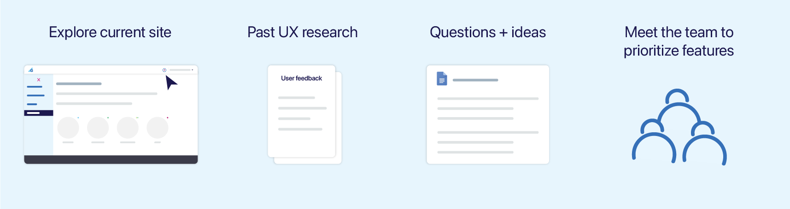

Redesigning the badges features for a gameful learning management system.
*The platform is currently under process of rebrand and redesign. Spire would be its new name.
overview
What is gradecraft?
GradeCraft is a learning management system that builds upon gameful pedagogy. It is a highly customizable platform that helps instructors design engaging courses and encourages learners to enjoy the process of learning without being afraid of failing.
Starting from Summer 2020, I have been working on redesigning the badges feature with my mentor, Sophia. The instructor facing views had gone through 15 iterations and were completed. Currently I am working on student facing redesigns which are very close to the finish line.
Duration
July 2020 - present
Type
Internship @ Umich Academic Innovation
Team
Project director, UX designer, behavioral scientists
My role
UX Design Fellow

process
Process

discover & define
Pre-design Information Gathering (July 2020)
Before digging into redesigning GradeCraft Badges, I poked through the current site and pulled up the interaction sitemap made by our user researchers to better understand how it works.
Thinking in isolation does not help. I reached out to my mentor Sophia and met our associate director Cait with a list of questions related to current features and ideas to improve user experience. From the talks, I was able to locate user needs and prioritize features.
ideate
Existing Features + Detected User Needs = New User Flows
Now that I have located user needs and prioritized MVP features, it’s time to transform information gathered into new user flows for the redesigned version of GradeCraft Badges. The process reminds me of times when I was recreating comfort food from my home country–I have all the ingredients prepared but no recipe. Like an experimentation, but with much guidance and clues, I started off with creating potential new user flows with notes scattered on Illustrator to keep a record of blooming new, but sometimes wild, ideas.

design & iterations
Feedback, Inspirations, and Improvements
Instructor facing prototypes have gone through 15+ iterations and student facing ones are currently under the fourth iteration. From weekly design work review with my mentor Sophia, I learnt best practices in naming Illustrator artboards and layers to help another designer understand the logic behind different interactions. From 3+ rounds of redesign meetings with our associate director Cait, I gained experience presenting design work to a non-designer and got inspiration from different points of view. And finally, from 2+ meetings with behavioral scientist Holly, I realized the power of language and how it helps the UI shine.
1. Instructor Badges Coursework: Showing blocked award summary in expanded accordions

2. Instructor Badges Setup: Displaying badge icon library in a modal

3. Student Badges: Simplify overview panel information in badge details page

reflection
Things I’d Like to Keep in Mind
Questions are street lights in the dark
Redesigning an entire feature for GradeCraft / Spire is challenging but rewarding. During the process, I sometimes feel that I am only seeing a part of the system and might have missed some user scenarios or design decisions made in the past. Asking questions, and many of them, has helped me tremendously in understanding the system holistically and catching tiny bugs in current and previous redesigns.
Final version? No way
I got this from my mentor Sophia and now believe that there’s no such thing as “final version” in design. Feedback from peer designers, new findings from user research, and inspiration from different roles all drive continuing iterations that refines user experience. In short, iterations do not stop and that is a natural and ongoing process.